Bruce Lee: the man behind the man behind the man who trains female comic heroes
Sun, 27 Nov 2011 12:32:12 -0500
Today would have been martial artist Bruce Lee’s 71st0th* birthday. In the 60s and early 70s, Lee was almost single handily responsible for the rise in popularity of martial arts. In addition to appearing as Kato in Green Hornet TV show (including a cross-over with Batman), he was the inspiration for Caine in Kung-Fu (instead the character was whitecast with David Carradine). But Lee was most famous for the series of Kung-Fu films he did. But did you also know that Bruce is also connected to some of the most fierce female fighters in the DCU?
I’m able to make this statement because of this book:
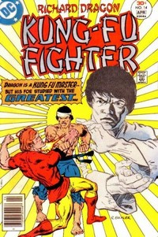
This series by Denny O’Neill had Richard Dragon facing off against a top martial artist. A man so good he was known as the:
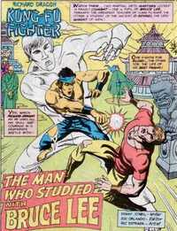
So Richard Dragon honed his skills against a man trained by Lee. And, of course, Dragon then went on to train:
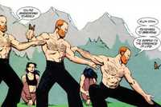
Helena Bertinelli, the Huntress (in Cry for Blood).
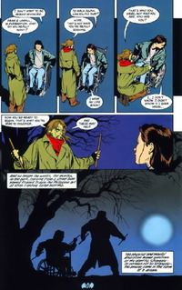
Oracle (in Oracle: Year One).
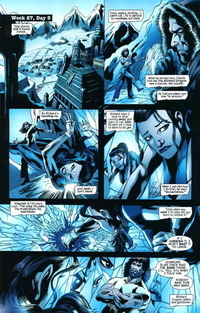
Renee Montoya (in 52).
Dragon also trained Vic Sage, the Question. Dragon also fought (in a series by Chuck Dixon which is may not be canon) Lady Shiva.
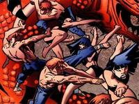
Bruce Lee is also responsible for the introductions of Misty Knight and Colleen Wing who first appeared in the pages of The Deadly Hands of Kung-Fu series published by Marvel to cash in on the popularity of Lee.
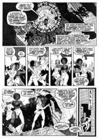
So if you like ass kicking DC (and Marvel) women, take a minute today to think of Bruce Lee!
*this is a repost from last year
New photo from Dark Knight Rises; Interview with Bale
Sat, 26 Nov 2011 19:01:49 -0500
The pictures from Empire magazine are now online and Bale has stated in an interview he is done as the Dark Knight:
Christian announced that this could be his last time as the masked vigilante whose secret identity is Bruce Wayne, an American billionaire who as a child witnessed his parents’ murder, leading him to a life of revenge on crime. “I wrapped a few days ago so that will be the last time I’m taking that cowl [Batman hood] off,” he said. “I believe that the whole production wrapped yesterday, so it’s all done. Everything’s finished. It’s me and Chris – that will be the end of that Batman era.”

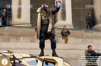
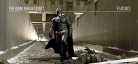
(via comingsoon)
Happy Birthday, Noel Neill!
Fri, 25 Nov 2011 09:25:58 -0500
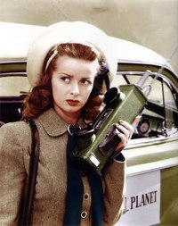
Today is Noel Neill’s 91st birthday. Neill played Lois Lane in the movies and later television. She also appeared in Superman: The Movie as the mother of a young Lois Lane.
Until the Superman movie came along in 1978, she was the live action Lois for most fans (although Phyllis Coates who Neill replace on the television show has her fans).
Neill played Lois as an aggressive, smart reporter and there was always just a bit of dryness in her scenes with George Reeves.
So happy birthday Noel!
And here’s a scene where Lois shows (See, she always knew!)
garabating:
Batgirl Supergirl by *potatofarmgirl
Batgirl and...
Wed, 23 Nov 2011 16:20:29 -0500
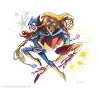
garabating:
Batgirl Supergirl by *potatofarmgirl
Batgirl and Supergirl by Brianne Drouhard who is doing the new Amethyst series on DC Nation.
What I am thankful for in comics this year
Wed, 23 Nov 2011 09:45:00 -0500
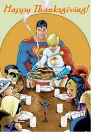Tomorrow is the day when the people of my country stuff themselves with pie, watch football, and give thanks.
Last year I did a list of comic “Turkeys” and a list of things I was thankful for in the world of comics. This year in the spirit of the season I decided to pass on enumerating the jaw droppingly bad stuff and focus on the good things. For the most part.
Here is an admittedly eclectic, rambling list of some of the things I am thankful in comics this year.
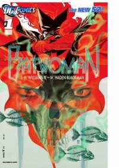Batwoman. It took so long to get here, but it was well worth the wait. Smart, gorgeous to look at and lucky enough to have had two wonderful creative teams with synergy between the first and the second, Batwoman right now is everything I want from a superhero comic with a female lead. I spoke with J.H. Williams III last night and after hearing what he had to say about the book, I am feeling confident it will be for a while. That the lead in this best-selling book is the first opening gay woman to headline an ongoing comic? Double thanks.
Scott Snyder. It’s not just that he’s a great comic book writer (because he is). It’s because with his run on Detective this year he reminded me of so many things I love about comics. First his work on issue # 875 gave me the jolt of what it is feels like when you read a truly great and memorable issue of a comic. Second, because of how he conveys how Gotham City is as an important character in the Bat-Mythos. Third, how he returned Cass Cain to the Batfamily in Gates of Gotham. And finally, the thrill of coming across a writer who you may have only been dimly aware of and then realizing the weren’t just good, they were so good you were going to follow them as a writer for the rest of your life. Thanks Scott.
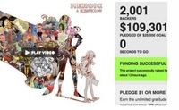Womanathology. Female creators and comics. There was lots of debate and lots of stories written this year that talked about the number of female creators or lack there of especially in superhero comics. (Let’s put it this way when I thought about a Turkey list the first item was titled “Who should I have hired?”) But with all the debate going on Renae De Liz decided to that showing is sometimes the best way to get a point across and put together a comic anthology consisting of all female creators. That in itself isn’t particularly new or different. What was different was that by using Kickstarter to fund it she was able to spotlight the demand of female created comics at a time when the debate was in full swing. The project blew past its initial funding goals and went from just a project to be funded into a crystallizing moment. If you haven’t ordered a copy yet, I can’t think of a better comic item to invest in this year. If you have some extra cash please order a copy of this book and send a message that you support female comic creators (and also help support charity).
Geek Girl Con. Another grass roots effort around women and comics or really all things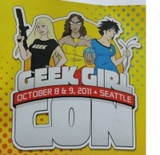 Geek. While I’m used to the debate about female comic readers (and by used to it I mean practically engrained in my DNA after this year) it was shocking to me that in the 21st century there was actually a debate about women being “true” geeks vs. “fake” geeks. The sad part was this debate actually had some women pissing on their own gender to try in some kind of effort to prove their real “geek” cred. Ugh.
But the wonderful women of Geek Girl Con decided to not just talk about the power of Girl Geeks but show it off. And so some smart women put on the first of its kind conference that was all about women and geek stuff. The response was great. The show sold out and the feedback from the attendees including creators was incredibly positive. Congrats to the organizers. And also congratulations to The Mary Sue who launched this year as a site devoted to women and geeky things.
Kyrax2. You can talk about the problems with female characters. You can write about the way they are treated. You can tell the powers to be how concerning it is. And while there may be some response, sometimes you need to move the dialogue to a higher level. And so I am thankful that a woman named Kyrax put on a Batgirl costume and decided to go ask some of these questions in person at SDCC. And the combination of the questions and their responses created yet another crystallizing moment this year for women in comics. The result of the showdown at SDCC was painful, controversial, divisive. But it got results and the debate about women and superhero comics will never be the same. But I would be remiss if I didn’t also mention the many other women who also have been fighting the good fight this year like Heidi McDonald, Laura Hudson, Ragnell, Maddy, Kelly Thompson, Corinna Lawson, Alexa Dickman, Esther Inglis-Arkell, Erika Peterman and Vanessa Gabriel, Soranga, Jill Pantozzi and others. And I’d like to also thank Tim Hanley who takes time each month at Bleeding Cool to give us a snapshot of the gender balance among creators at the big two despite the comments.
Oh and hey DC thanks for Nicola Scott on JSA and Superman and Ann Nocenti on Green Arrow!
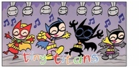All the Batgirls. In a year where the statement “every one of the former Robins” brought up concerns about the treatment of female characters in the DC reboot, Franco and Art Bathazar and Sholly Fisch of the Johnny DC line gave us a wonderful world where all the Batgirls and and the Robins, both boy and girl, can exist together. That only everyone at DC could share that view.
Digital Distribution. Every Wednesday at 2PM, I can now read new comics no matter where I am. DC Comics went digital this year and the world didn’t fall apart. Next year Marvel joins in. I hope this brings in a new set of readers to fuel the market even more.
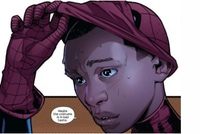Miles Morales. In a year where at times I wanted to bang my head against a wall about how comics handle diversity, there is now a non-white Spider-Man. So thanks Marvel. And thanks DC for bringing back Ryan Choi and having Batwing, Static Shock, Mr. Terrific and Blue Beetle titles in your new 52 (we still need to talk about WoC). Thank you for giving kids who aren’t white a superhero that looks like them.
Great Writers. Creators that give me great female characters in superhero comics always have my thanks. So thank you for your work this year Bryan Q. Miller, Gail Simone, Greg Rucka, Marjorie Liu, Kathryn Immonen, G. Willow Wilson, Kelly Sue DeConnick, Paul Cornell, J.H. Williams III/Haden Blackman and others, who I am sure I will think of as soon as I hit post, for the work you do.
Kate Beaton. What can I say that will top reading this? Or this? Okay, I give you sexy Batman (with sexy, but not apparently dirty, Catwoman)
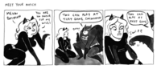
Brilliant.
Artists who get it when it comes to female characters. Thanks Nicola Scott, J.H. Williams III, Emma Rios, Cliff Chiang, Pere Perez, Dustin Nguyen, Phil Noto, Francesco Francavilla, Jesus Saiz, Marcus To, Francis Manapul, Mikel Janin, and Amy Reeder to name just a few, for understanding.
You! I am truly thankful that there are so many people share the passion I have for great female characters and a vision where everyone can have an equal seat at the superhero comic table. Thanks for reading, commenting, Tweeting, sending your wonderful pictures into Girls Love Superheroes and Women Read Comics, for voting in the kick ass contest and listening to the podcast.
So I wish you and yours a healthy day and much good pie. What are you thankful for?
It's Kim Yale's Birthday
Tue, 22 Nov 2011 18:45:00 -0500
I can’t let this day go by without note. Cheers to Kim Yale who decided that whatever DC did to Barbara Gordon could be made into a story of hope and triumph.
Yale, with her husband John Ostrander created the role of Oracle for Barbara Gordon in Suicide Squad after the character was shot in The Killing Joke. They later told her year the story of her transformation in the Batman Chronicles’ Oracle:Year of Hope. Barbara Randall Kesel told me in an interview earlier this year that “Kim was passionate about Barbara not sitting on the sidelines. …Kim took Barbara’s (the fictional one) situation very seriously and worked tirelessly to promote Barbara’s rehabilitation.”
Kim’s contributions to comics were noted when the Friends of Lulu award for Best Newcomer was named after her. Devin Grayson and Kate Beaton are among its recipients.
Happy Birthday, Kim and thanks.
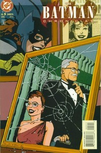
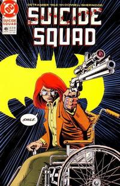
Nolan: The Dark Knight Rises is set 8 years after TDK
Mon, 21 Nov 2011 13:12:58 -0500
Empire Magazine has put up some of their story from the multi-cover issues I posted earlier. And one quote from Chistopher Nolan stands out:
“It’s really all about finishing Batman and Bruce Wayne’s story. We left him in a very precarious place. Perhaps surprisingly for some people, our story picks up quite a bit later, eight years after The Dark Knight. So he’s an older Bruce Wayne; he’s not in a great state.
Also the teaser trailer set to debut next month is basically the first 8 minutes of the movie and focuses on Bane.
Eight years? That’s a surprise.
Kick ass tournament: The final match
Mon, 21 Nov 2011 07:01:00 -0500
It’s the final match of the tournament. We started with 32 women and are now down to two. There are no losers in this tournament; all these women are kick ass. But only one can be “The Most Kick Ass DC Woman” for 2011.
In one corner Cassandra Cain and in the other Wonder Woman. Both brave, true, fearless and kick ass. But who is the most kick ass? You decide!
Below are the match-ups that brought each character to this day.
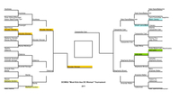
embiggen here
Polls are open until 9pm EST tonight. One vote per person please.
The case for Cassandra Cain is here.
The case for Wonder Woman is here.
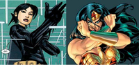
http://micropoll.com/t/KEcOAZEx8X
7:00 PM Currently the count for Cassandra Cain is - 167 votes as seen due to admitted voter fraud.